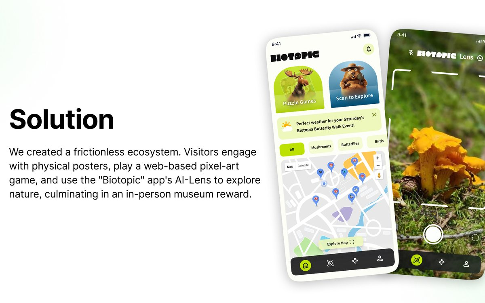
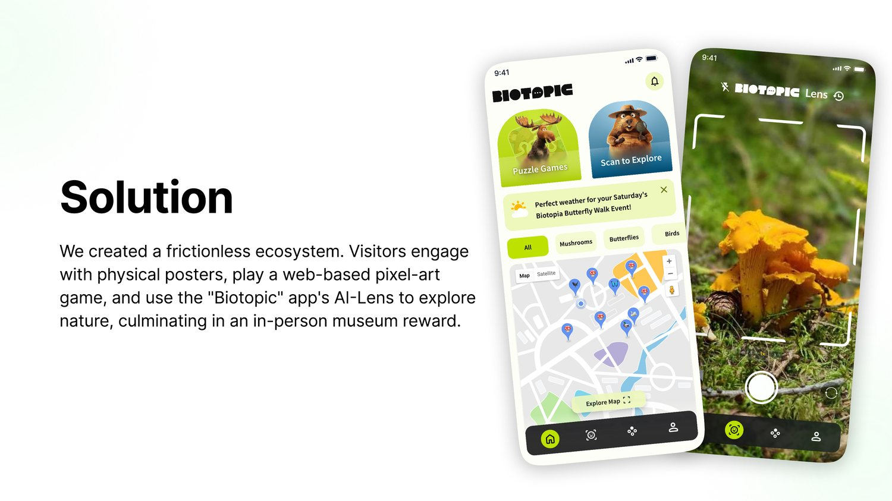
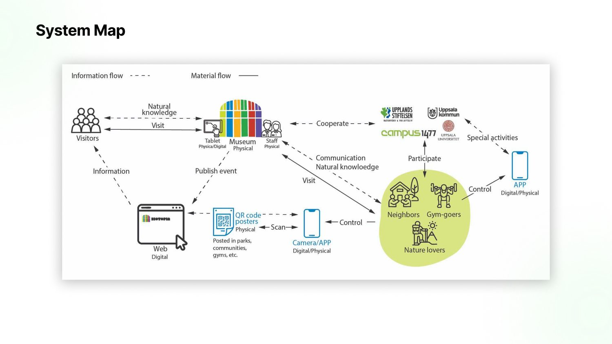
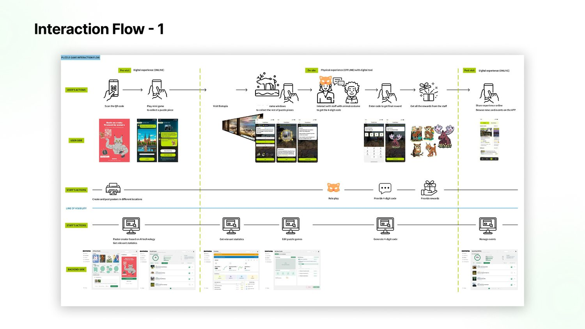
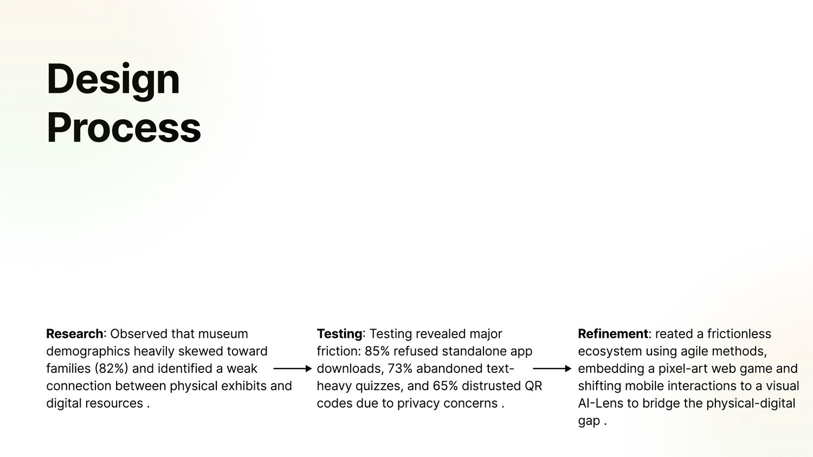
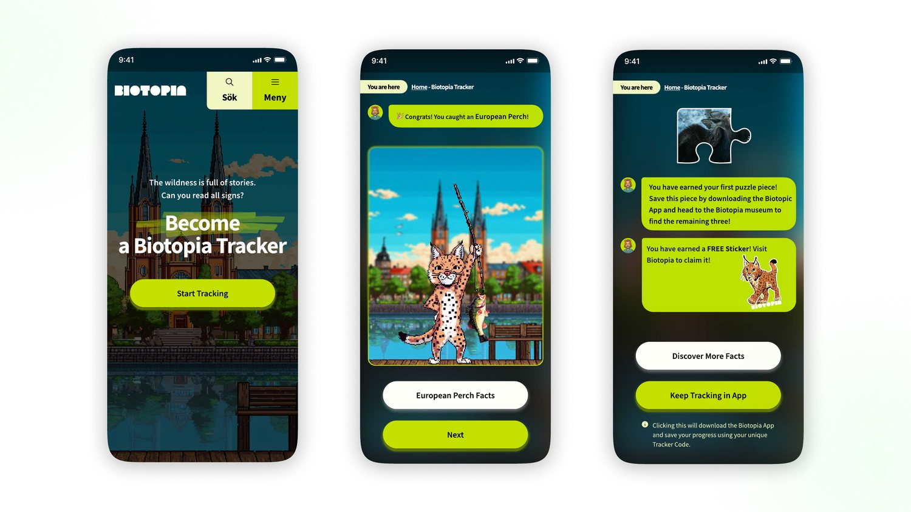
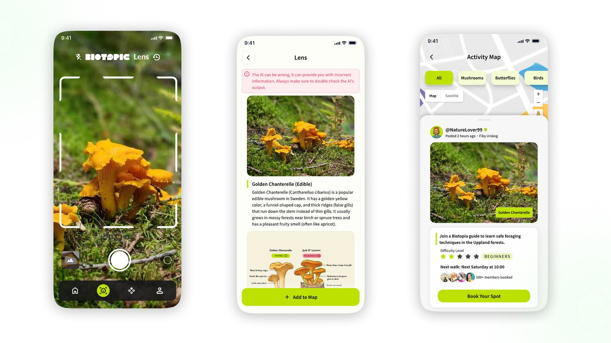

Service Design · UX
A service design for Biotopia, Uppland's natural history museum — bridging physical exhibits and digital experiences through a frictionless web game, an AI-Lens app, and an AI-assisted staff portal.

Biotopia is a natural history museum in Uppland with over a century of history, known for its theatre-like dioramas of local wildlife. On-site observation revealed two linked problems: its visitor base was narrow — overwhelmingly families with young children — and the connection between its digital resources and physical exhibition was weak.
Biotopic is the support system we designed to address this: a service that restructures Biotopia's existing touchpoints, adds a few carefully chosen new ones, and links potential visitors, partner organisations, and museum staff into one ecosystem. I worked on this as part of a four-person team in the Interaction Design course at Uppsala University.
We began with an ambitious plan: a complex standalone web app and a highly social mobile app. Field research and early user testing quickly dismantled that assumption. Rather than a lack of features, the real barriers were about trust and effort at the point of entry — exactly where a visitor decides whether to engage at all.
A third finding ran through everything: a strong rejection of text-heavy, didactic quizzes. People wanted to look and do, not read and be tested. These three frictions — download resistance, QR distrust, and quiz fatigue — became the constraints the whole design had to solve around.
The pivot was to strip away friction instead of adding features. The result is a single connected loop that meets people where they already are — on a walk, at a gym, in a park — and draws them gently inward toward the museum and the local climate conversation.
Physical posters in public spaces act as the entry point, pairing a captivating animal illustration with a glimpse of a reward and a QR code. That code opens a pixel-art web activity embedded in Biotopia's existing website — no download, and built on infrastructure the museum already pays for. Completing it earns the first puzzle piece and invites the visitor to collect a physical sticker in person and continue in the Biotopic app, whose AI-Lens turns everyday nature into something to identify, collect, and share. The loop closes inside Biotopia itself, where finishing the puzzle means talking to staff and joining the community.
To address the QR distrust head-on, we designed for radical transparency: Google and Apple sign-in paired with clear GDPR and terms-of-service notices, so the first interaction builds trust rather than asking for blind faith.

Because visitors constantly alternate between physical and digital environments, a standard service blueprint wasn't enough. Our main design outcome was a hybrid system map that merges traditional user-journey mapping with backend data-transition logic — visualising, in one artefact, the intersection of physical triggers, digital interfaces, and the data systems that connect them.
Alongside it, detailed interaction flows separate the user side (pre-visit, on-site, post-visit) from the staff and backend side (line of visibility), so the experience that feels effortless to a visitor is also demonstrably manageable for the museum.


We followed an iterative research-through-design methodology across two sprints, managed in Jira. On-site non-participant observation and system walkthroughs of Biotopia's website and pamphlets grounded our early assumptions, which user testing then forced us to revise. Throughout, we used annotated portfolios to document each artefact and capture the knowledge generated between iterations.
On-site observation and system walkthroughs revealed a family-skewed audience and a weak link between physical exhibits and digital resources.
Testing exposed download resistance, QR privacy distrust, and rejection of text-heavy quizzes — forcing a strategic pivot away from a standalone app.
Reframed the solution around frictionless entry: a web-embedded pixel-art game, a visual AI-Lens, and transparent sign-in, iterated sprint by sprint.

The web activity is a pixel-art game embedded in Biotopia's own site — the frictionless first touch that hands off a puzzle piece and a reason to visit. The Biotopic app centres on an AI-Lens that lets people capture, identify, and learn about a plant or animal they come across, plus News & Events and an Activity Map of recent local sightings. The in-person museum activity closes the loop: visitors complete the puzzle among the dioramas and collect their reward from staff.
Behind all of it sits a backend administrator portal. It lets staff create posters, edit and approve activities, and moderate user profiles — with AI-powered tools automating time-consuming work like content moderation, so the system stays manageable for a small museum team with real resource limits.


In small-scale user testing, the prototype attracted a more diverse range of visitors than Biotopia's current experience while improving the interactions already on offer — early evidence that stripping away entry friction, rather than adding features, was the right bet.
Beyond the museum, the poster → web → app loop is a transferable pattern. Retail, eco-tourism, and urban-planning contexts face the same challenge of converting offline audiences into engaged digital communities without heavy download or privacy friction, and the hybrid system map offers a reusable way to design for it.
A four-person Interaction Design project at Uppsala University (with Petar Gomari, Mengxi Jia, and Pofei Ran). Some illustrative assets — stickers, avatars, and the pixel-art backdrop — were produced with AI image tools under the team's creative direction.